Experiment 1: Virtual Machine Installation and Configuration
1. Experimental goals
Master the basic installation and configuration methods of VMware virtualization software.
Learn to create an Ubuntu 20.04 LTS virtual machine in VMware and complete the system installation.
Understand the core concepts of virtual machines (such as hardware isolation, snapshot management) and their application scenarios in development and testing.
2. Experimental preparation
Hardware requirements
Physical machine configuration: It is recommended to have more than 8GB of memory and more than 50GB of available disk space (the virtual machine needs to occupy about 20GB).
Software resources (can be downloaded from the official website, copied by the teaching assistant to save time)
VMware Workstation Pro 16
Ubuntu 20.04 LTS Desktop version image file
Tool preparation
Task Manager (check the number of CPU cores on the physical machine).
A text editor (such as Notepad, used to record virtual machine configuration parameters).
3. Experimental steps
Stage 1: VMware software installation
For the specific graphic process, open this link in your browser:
https://leigongbiji.blog.csdn.net/article/details/130641288?fromshare=blogdetail&sharetype=blogdetail&sharerId=130641288&sharerefer=PC&sharesource=SteveZhang114514&sharefrom=from_linkDownload and install
Visit the VMware official website and download the Workstation Pro 16 installation package.
Double-click the installation package and follow the wizard prompts to complete the installation (it is recommended to select the D drive for the installation path).
Once the installation is complete, create a desktop shortcut.
Verify installation
Start VMware and check whether the "Create New Virtual Machine" button is displayed on the main interface.
Stage 2: Create Ubuntu virtual machine
Please refer to the graphic process for specific details and open this link in your browser:
https://blog.csdn.net/air_729/article/details/143105854?fromshare=blogdetail&sharetype=blogdetail&sharerId=143105854&sharerefer=PC&sharesource=SteveZhang114514&sharefrom=from_linkNew Virtual Machine Wizard
Open VMware, click "Home" → "Create New Virtual Machine"
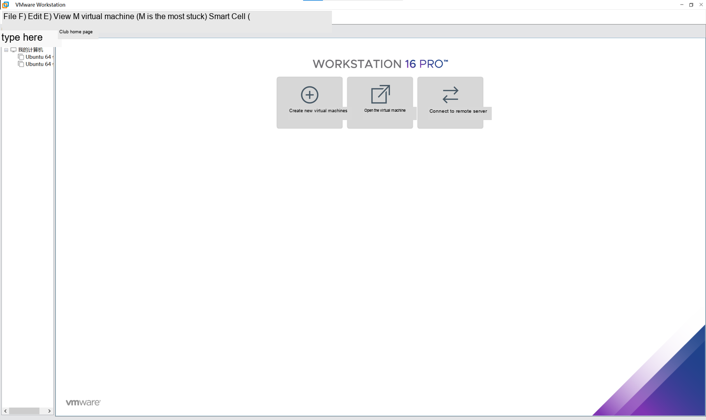
Select Custom (Advanced) and click Next
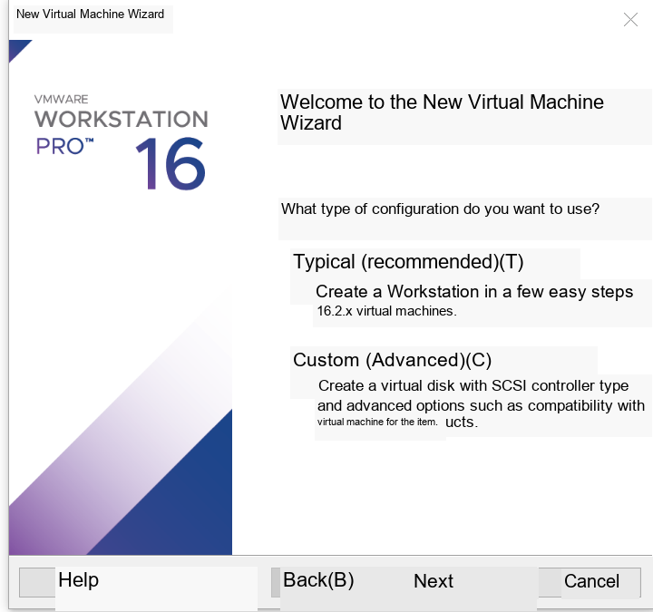
Directly select next step in this interface
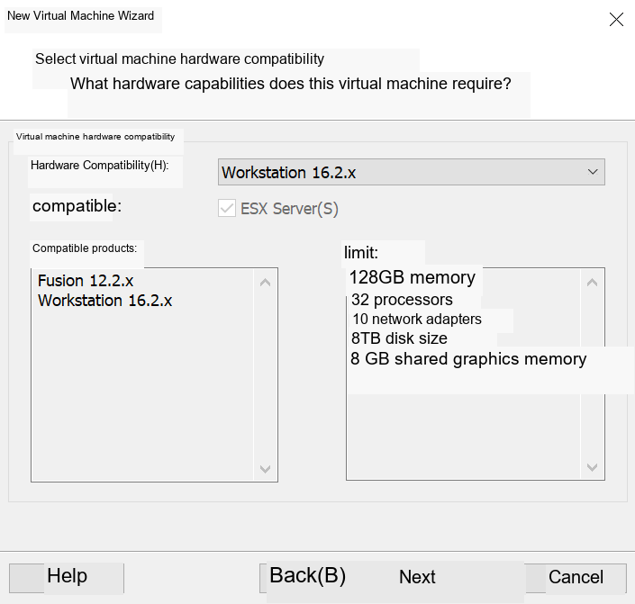
In this interface, click Browse to select the ubuntu20.04 system image file, and click Next
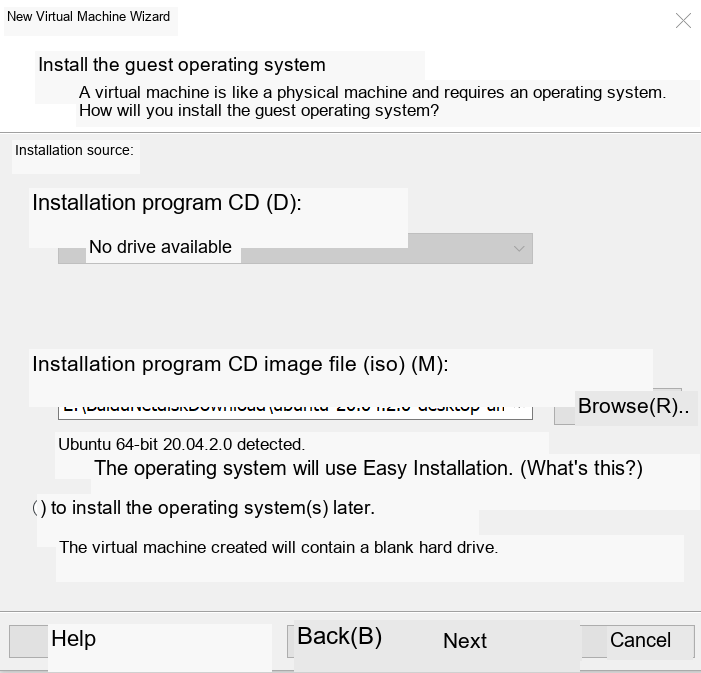
In this step, set the user information in the system. It is recommended to use root as the password. Click Next.
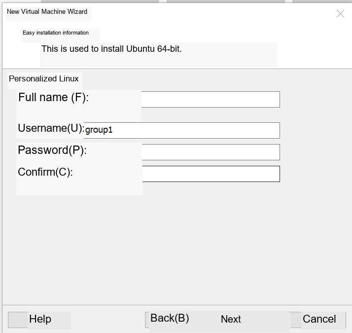
In this step, set the name of the virtual machine. The location can be customized or the default path can be used. Click Next.
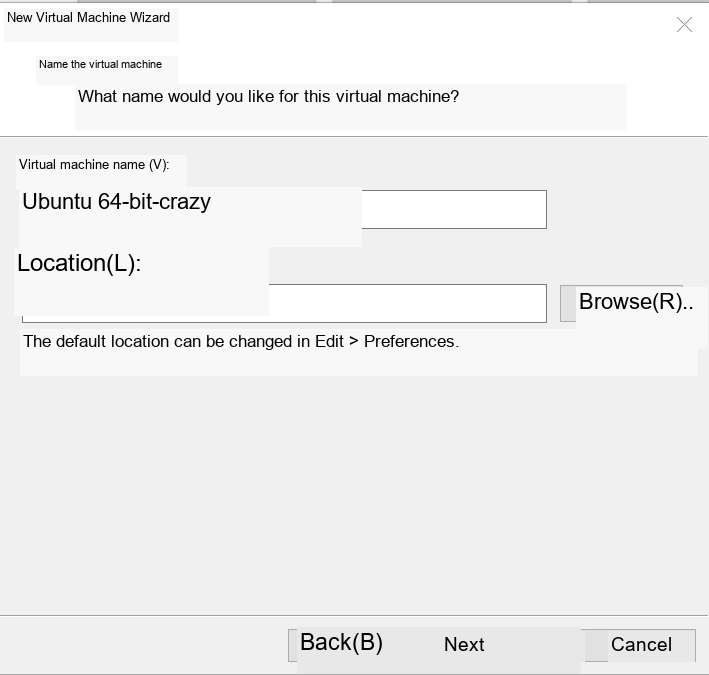
The number of processors and cores can be adjusted appropriately. You can set it as shown and click Next.
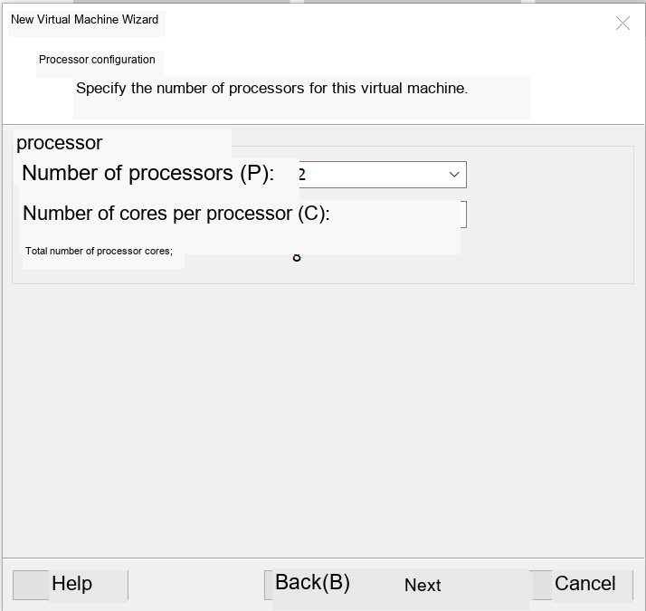
You can use the default recommended memory for running memory, click Next
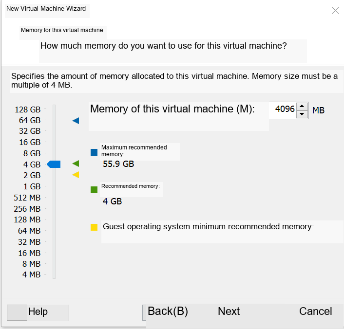
You can use the default configuration for the network type, click Next
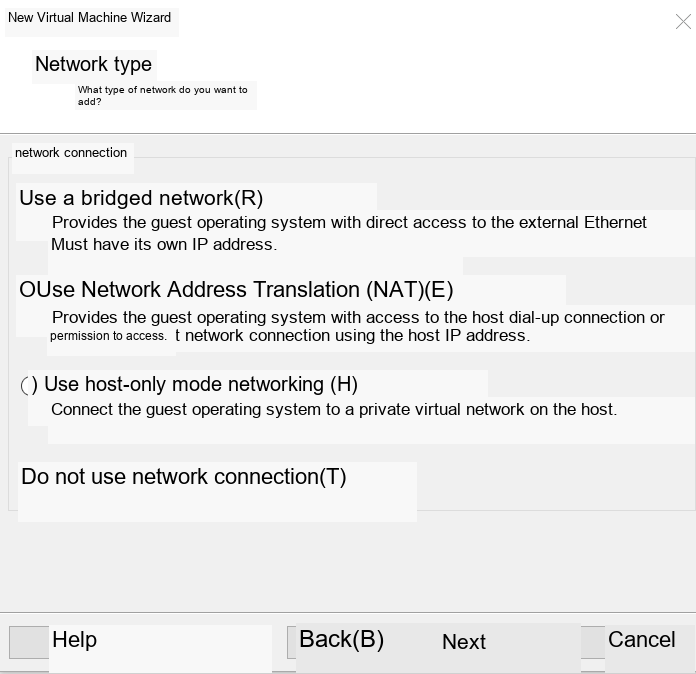
Still using the recommended controller, click Next
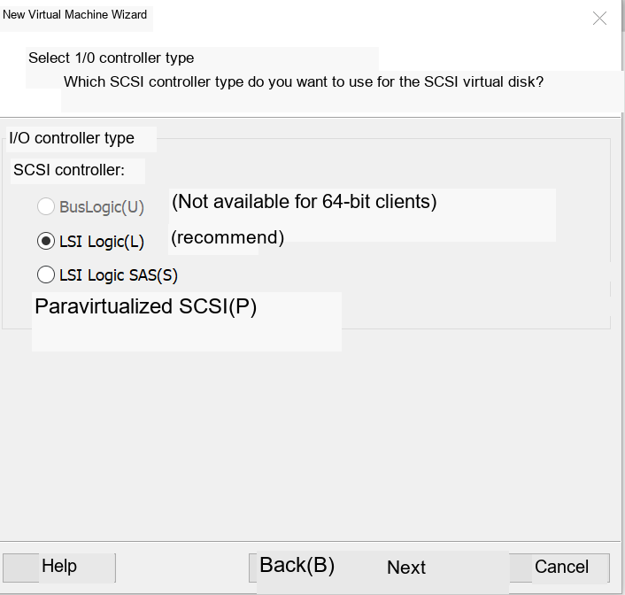
Select the recommended disk type and click Next
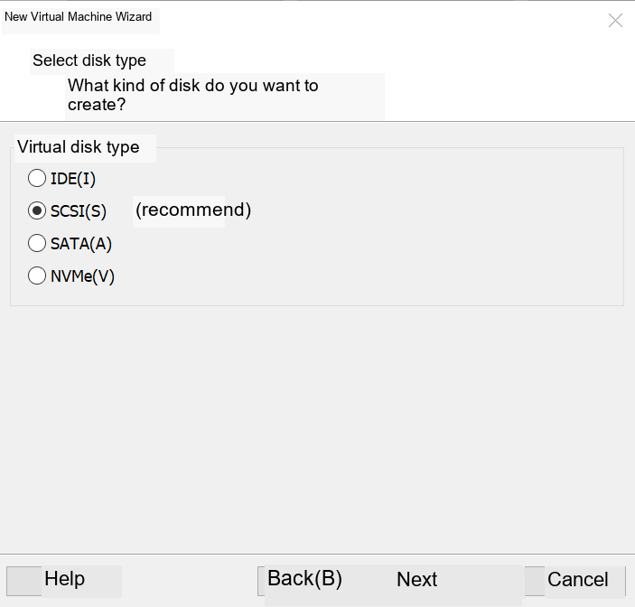
Select Create a new virtual disk and click Next
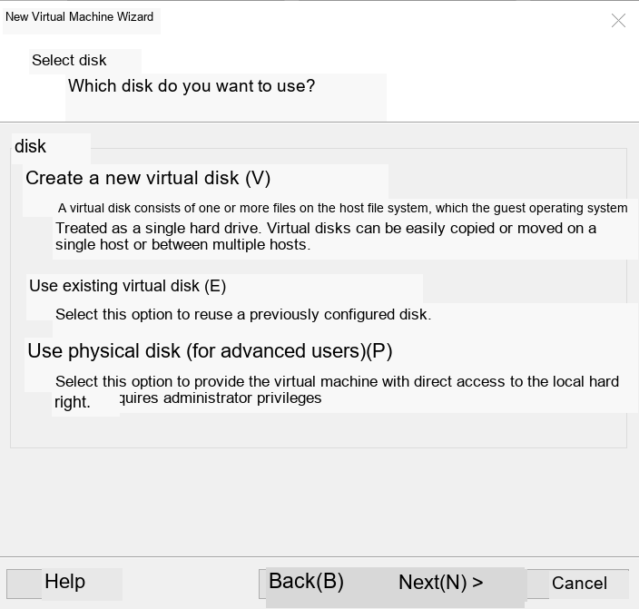
You can slightly increase the disk space, click Next
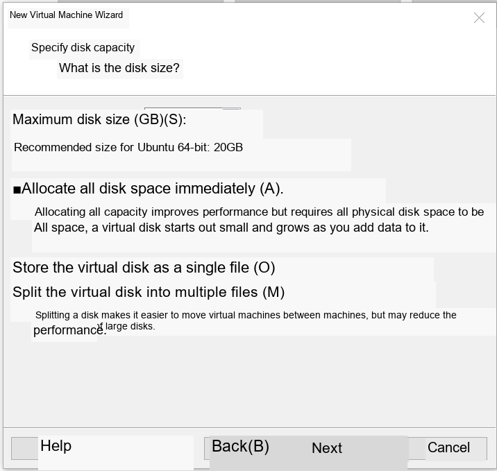
Just click Next on this page
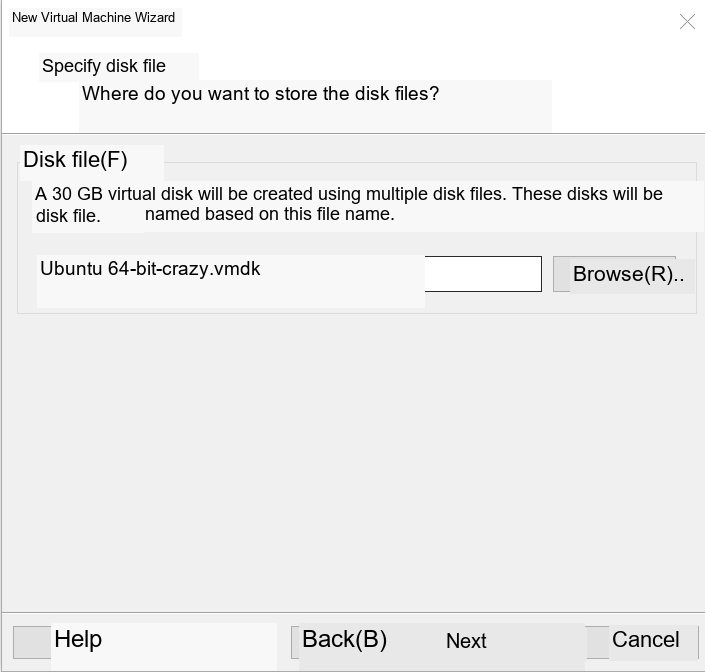
Click Finish at this point, and the virtual machine will be automatically created.
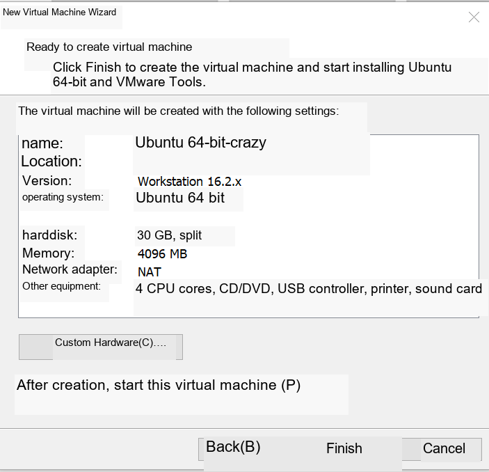
Naming and storage
Virtual machine name: Ubuntu20.04_Test.
Storage path: Select the newly created VMware_Ubuntu folder under drive D.
Hardware configuration
Processor: allocated according to the number of cores of the physical machine (for example, a 4-core CPU is allocated 2 cores, and each core has 1-2 threads).
Memory:
Basic tasks: 2GB
Multitasking/development environment: 4GB
Reserve at least 4GB of memory for the physical machine.
disk:
Type: SCSI (recommended)
Capacity: Allocate 60GB, select "Store as single file".
Network: Default NAT mode (automatically obtains IP and can access the external network).
Load ISO image
In the virtual machine settings, select the CD/DVD drive and load the downloaded Ubuntu 20.04 ISO file.
Stage 3: Install Ubuntu 20.04
Start virtual machine
Click "Start this virtual machine" and wait for the Ubuntu installation boot interface to load.
System installation process
Language selection: Chinese (Simplified).
Keyboard layout: Default English (US).
Installation type: Select "Minimal Installation" (to save disk space) or "Normal Installation" (including commonly used software).
Partition settings:
Select "Other options" to create the partition table manually.
Partitioning scheme:
/ (root directory): 20GB, EXT4 file system.
/home (user directory): remaining space, EXT4 file system.
Swap (swap partition): 2GB (spare when memory is insufficient).
User information: Set username (such as student) and password (need to remember).
Installation is complete: Click "Restart", remove the ISO image and press Enter.
System initialization
After logging in, follow the prompts to skip online account binding and privacy settings.
Adjust taskbar icons: right-click to hide infrequently used applications and add "Terminal" to favorites.
Stage 4: Virtual machine optimization and snapshot management
Install VMware Tools
Select "Virtual Machine" → "Install VMware Tools" on the VMware menu bar.
Open the Ubuntu terminal (press ctrl+alt+T at the same time on the main interface) and execute the following command:
There are three lines of three commands here. After entering each one, press Enter to execute the command.


After the reboot command, the virtual machine will restart. The virtual machine window will automatically adapt to the screen resolution and support dragging and dropping files with the physical machine.
2. Create snapshot
Click "Snapshot" → "Take Snapshot" on the VMware menu bar.
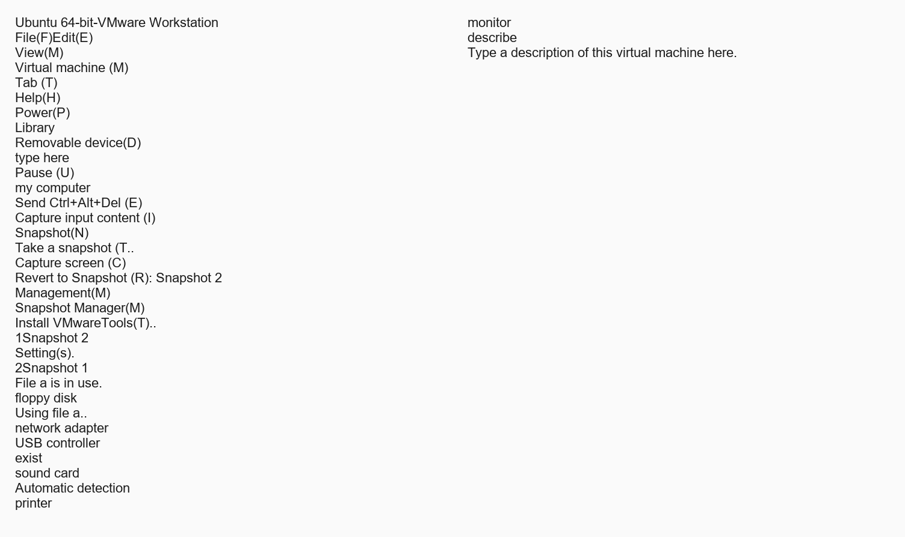
Name the snapshot Ubuntu20.04_Clean and note "Initial clean system state".
4. Experimental verification and testing
Network connectivity test
Open the Ubuntu terminal and execute:

Observe whether the reply packet can be received normally.
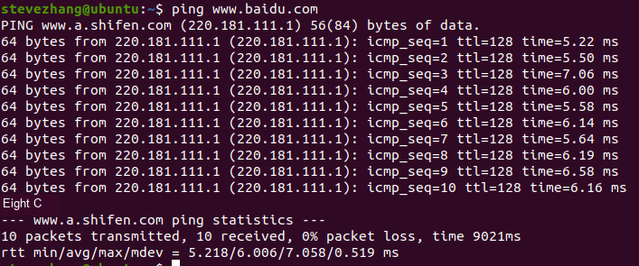
Snapshot recovery test
Right-click the virtual machine in VMware and select "Snapshot" → "Restore to Snapshot Ubuntu20.04_Clean".
Confirm that the system is restored to its initial state.
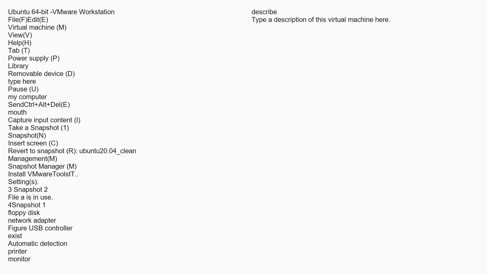
5. Experiment summary and extension
Review of core knowledge points
Virtual machines simulate hardware through software to achieve operating system isolation.
The snapshot function can quickly save/restore the system state and is suitable for development and testing scenarios.
Expansion tasks (optional)
Install Python3.10 version in the virtual machine (can use the Internet).
Reference links
This section organizes external links that appear in the manual into bullet points that are readable offline. To prevent the material from being too long, the web content is summarized in the form of classroom purposes and key tips, and the original URL is retained for reference after class.
- VMware Workstation 16 installation tutorial (webpage title: [Virtual Machine] VMware 16 nanny-level installation tutorial-CSDN blog)
Original link: https://leigongbiji.blog.csdn.net/article/details/130641288
Class purpose: Assist in completing VMware installation, authorization, restart and first boot check on Windows hosts.
- It is suitable as a graphic reference for virtual machine software installation, focusing on the installation wizard, license agreement, installation location, enhanced keyboard driver and restart confirmation.
- Classroom operations are subject to the steps in this manual; the content on the webpage is for reference when encountering differences in the installation interface.
- After installation, you need to confirm that VMware can create new virtual machines normally and record the software version.
- Install and configure Ubuntu in VMware (Webpage title: Install and configure Ubuntu in VMware (2024 latest version, super detailed)_vmware install ubuntu-CSDN blog)
Original link: https://blog.csdn.net/air_729/article/details/143105854
Class purpose: Assist in completing Ubuntu image download, virtual machine creation, system installation and domestic image source configuration.
- The webpage follows the process of creating a virtual machine with VMware, selecting the Ubuntu image, configuring CPU/memory/disk, and starting the installation.
- It is recommended to use Ubuntu 20.04 LTS in the class; if the web page example versions are different, only refer to the operation path and do not directly replace the course version.
- After installation, it is necessary to verify that the system can enter the desktop and the terminal is available, and it is recommended to retain the initial snapshot.